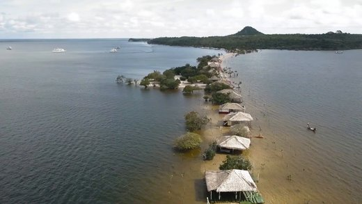

00:01:20.314
Vista aérea longitudinal da Ilha do Amor, com barracas de palha cercadas de água, areia exposta mais ao fundo e a Serra Piroca no horizonte.
Ilha do Amor, Alter do Chão, Santarém, PA · confirmado
A abertura registra a temporada das águas de junho de 2024, quando ainda havia pontos de praia expostos. O filme situa a data da visita em 11 de junho de 2024.
Transcrição · 00:00:10 | 00:00:20 | 00:01:03 | 00:01:42 | 00:01:52
Turismo Aqui — quadro de vídeo publicado no YouTube
Referência 1